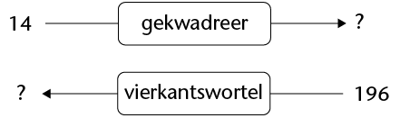
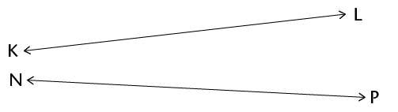
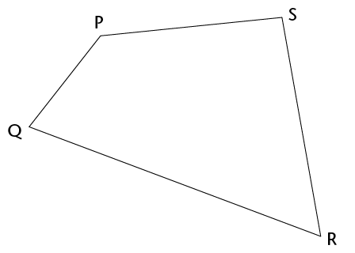
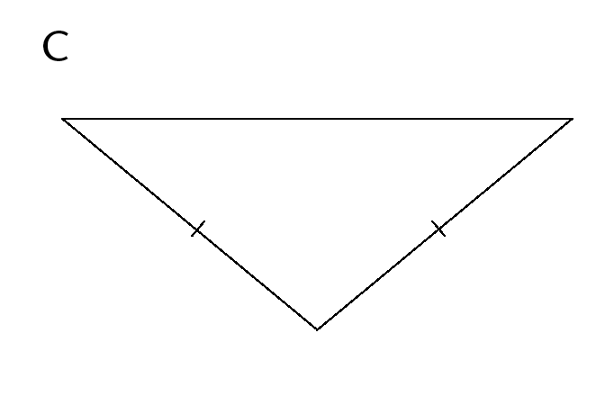
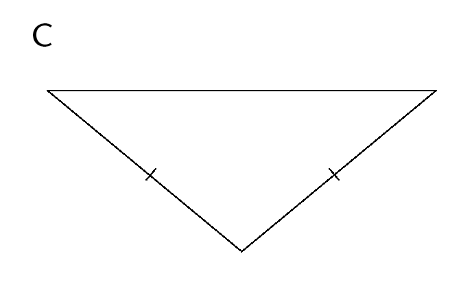
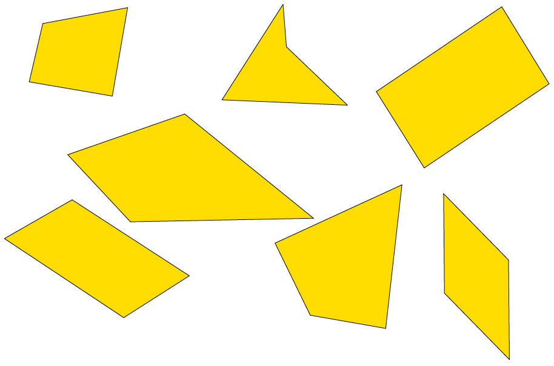
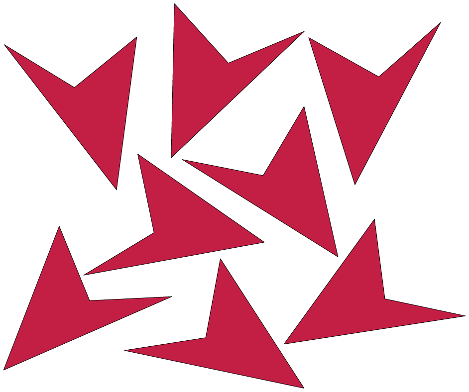
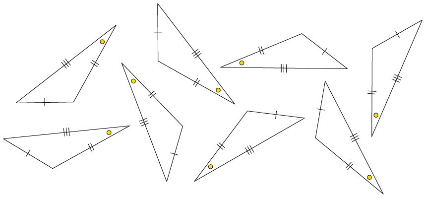
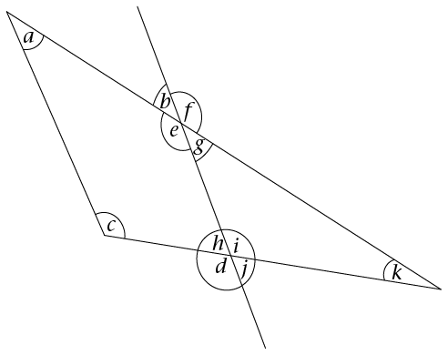

Eksponente
In dié hoofstuk sal jy leer hoe om berekeninge soos hierdie op 'n kort manier te beskryf:
\(3 \times 3 \times 3 \times 3 \times 3 \times 3 \times 3 \times 3 \times 3 \times 3 \times 3 \times 3 \times 3 \times 3 \times 3 \times 3 \times 3 \times 3 \times 3\)
Jy ken alreeds 'n kort manier om berekeninge soos dié te beskryf:
\(3 + 3 + 3 + 3 + 3 + 3 + 3 + 3 + 3 + 3 + 3 + 3 + 3 + 3 + 3 + 3 + 3\)
Vinnige kwadrate en derdemagte
Weer en weer
-
Hoeveel is elk van die volgende?
-
\(2 \times 2\)
\(3 \times 3\)
\(4 \times 4\)
\(5 \times 5\)
\( 6 \times 6\)
- \(7 \times
7\)
\(8 \times 8\)
\( 9 \times 9\)
\( 10 \times 10\)
\( 11 \times 11\)
\(12 \times 12\)
\(1 \times 1\)
In plaas van "tien maal tien" kan ons sê "tien kwadraat", en ons kan \(10^2\) skryf.
-
Voltooi die tabelle.
\(2 \times 2\)
\(12 \times 12\)
\(8 \times 8\)
\(2^2\)
\(5^2\)
\(4^2\)
2 kwadraat
10 kwadraat
25
100
64
\(1 \times 1\)
\(9 \times 9\)
\(7^2\)
\(9^2\)
11 kwadraat
3 kwadraat
121
36
8 kwadraat is 64, and 9 kwadraat is 81. Voltooi:
-
25 is die kwadraat van
-
100 is die kwadraat van
-
64 is die kwadraat van
-
36 is die kwadraat van
-
-
Bereken.
-
\(10^2 + 5^2 + 2^2 \)
\( 5 \times 10^2 + 7 \times 10 + 3\)
-
\( 7 \times 10^2 + 3 \times 10 + 6\)
-
\( 2 \times
10^2 + 9 \times 10 +
6\)
-
Hoeveel is elk van die volgende?
-
\(2 \times 2 \times 2\)
-
\(3 \times 3 \times 3\)
-
\(4 \times 4 \times 4\)
-
\( 5 \times 5 \times 5\)
-
\(6 \times 6 \times 6\)
-
\(7 \times 7 \times 7\)
\( 8 \times 8 \times 8\)
\(9 \times 9 \times 9\)
\(10 \times 10 \times 10\)
-
\(11 \times 11 \times 11 \)
\( 12 \times 12 \times 12\)
\(13 \times 13 \times 13\)
\( 1 \times 1 \times 1\)
-
Voltooi die tabelle.
\(4 \times 4 \times 4\)
\(7 \times 7 \times 7\)
\(4^3\)
\(11^3\)
4 tot die mag 3
2 tot die mag 3
64
216
1 000
\(8 \times 8 \times 8\)
\(9^3\)
12 tot die mag 3
3 tot die mag 3
1
125
In plaas van "10 maal 10 maal 10" kan ons sê "10 tot the mag van 3", en ons kan \(10^3\) skryf.
-
5 tot die mag 3 is 125, en 9 tot die mag 3 is 729. Watter getal tot die mag 3 is:
-
27?
-
1 000?
-
8?
-
1?
-
216?
-
343?
-
-
Bereken:
-
\( 3 \times 10^3 + 7 \times 10^2 + 5 \times 10 + 6\)
\( 7 \times 10^3 + 7 \times 10^2+ 7 \times 10 + 7\)
-
\( 8 \times 10^3 + 1 \times 10^2 + 4 \times 10 + 2\)
- \(4 \times
10^3 + 3 \times 10^2 + 4 \times 10 +
9\)
-
\( 10 \times 10^2\)
\(10^2 \times 10^2\)
-
-
Kan jy dink aan twee getalle, waar die kwadraat van die een getal gelyk is aan die ander getal tot die mag 3?
-
Kan jy dink aan twee getalle, waar die som van hul kwadrate die kwadraat van 'n ander getal is?
Die eksponensiële notasie
Herhaalde vermenigvuldiging met dieselfde getal
-
Druk elke getal hier onder uit as 'n produk van priemfaktore. Voorbeeld: Example: \(250 = 2 \times 5 \times 5 \times 5\)
-
35
-
70
-
140
-
280
-
81
-
625
5 is 'n herhaalde faktor van 250. Dit word 3 keer herhaal.
-
Watter getalle in vraag 1 het herhaalde faktore? Sê in elke geval watter getal herhaal word as 'n faktor en hoeveel keer dit herhaal word.
'n Getal wat uitgedruk kan word as 'n produk van een herhaalde faktor word 'n mag van daardie getal genoem.
Voorbeelde: 32 is 'n mag van 2, want \(32 = 2 \times 2 \times 2 \times 2 \times 2\)
100 000 is 'n mag van 10, want \(10 \times 10 \times 10 \times 10 \times 10 = 100 000\)
-
Druk elke getal uit as 'n mag van 2, 3, 5 of 10.
125
64
-
100
1 000
-
Bereken elk van die volgende. Jy kan elke antwoord gebruik om die volgende antwoord te kry.
-
\( 2 \times 2 \times 2 \times 2\)
-
\( 2 \times 2 \times 2 \times 2 \times 2\)
-
\( 2 \times 2 \times 2 \times 2 \times 2 \times 2\)
-
\( 2 \times 2 \times 2 \times 2 \times 2 \times 2 \times 2\)
-
\( 2 \times 2 \times 2 \times 2 \times 2 \times 2 \times 2 \times 2\)
-
\( 2 \times 2 \times 2 \times 2 \times 2 \times 2 \times 2 \times 2 \times 2\)
-
\( 2 \times 2 \times 2 \times 2 \times 2 \times 2 \times 2 \times 2 \times 2 \times 2\)
-
\( 2 \times 2 \times 2 \times 2 \times 2 \times 2 \times 2 \times 2 \times 2 \times 2 \times 2\)
-
\( 2 \times 2 \times 2 \times 2 \times 2 \times 2 \times 2 \times 2 \times 2 \times 2 \times 2 \times 2\)
-
\( 2 \times 2 \times 2 \times 2 \times 2 \times 2 \times 2 \times 2 \times 2 \times 2 \times 2 \times 2 \times 2\)
Omdat die faktor 2 vyf keer herhaal word, word 32 die vyfde mag van 2, of 2 tot die mag 5 genoem.
Net so is 125 die derde mag van 5.
125 kan ook "5 tot die mag 3" genoem word.
-
Die sewende mag van 2 word in vraag 4(d) gewys. Watter mag van 2 word in elk van die volgende dele van vraag 4 gewys?
4(j)
-
4(i)
-
4(h)
-
4(f)
-
Watter mag van watter getal word in elke geval hier onder gewys?
-
\( 15 \times 15 \times 15 \times 15 \times 15 \times 15 \times 15 \times 15\)
-
\( 12 \times 12 \times 12 \times 12 \times 12 \times 12 \times 12 \times 12 \times 12 \times 12 \times 12 \times 12\)
In plaas van "5 tot die mag 6", kan ons 56 skryf. Dit word die eksponensiële notasie genoem.
\(5^6\) means \(5 \times 5 \times 5 \times 5 \times 5 \times 5\).
\(5 \times 6\) beteken \(6 + 6 + 6 + 6 + 6\).
-
Skryf elk van die getalle in vraag 3 in eksponensiële notasie.
-
Skryf elk van die getalle in vraag 4 in eksponensiële notasie.
-
Skryf die getal in elke geval in eksponensiële notasie.
-
Die vyfde mag van 5
-
Die sesde mag van 5
-
Die derde mag van 4
-
6 tot die mag 4
-
4 tot die mag 6
-
5 tot die mag 15

\(3^5\) beteken \(3 \times 3 \times 3 \times 3 \times 3\).
Die herhaalde faktor in 'n mag word die grondtal genoem.
Die getal herhalings word die eksponent genoem.
\(3^1\) beteken 3. Die grondtal is 3 maar daar is geen herhalings nie. Enige getal tot die mag 1 is gelyk aan die getal self.
-
In elke geval hier onder word inligting oor 'n getal gegee. Elke getal kan as 'n mag uitgedruk word. Wat is die getal in elk van die gevalle?
-
Die grondtal is 5 en die eksponent is 3.
-
Die grondtal is 10 en die eksponent is 4.
-
Die grondtal is 20 en die eksponent is 3.
-
Bereken elk van die volgende:
-
\( 5 \times 5 \times 5 \)
-
\( 5 \times 5 \times 5 \times 5 \times 5\)
-
\( 5 + 5 + 5\)
-
\( 5 + 5 + 5 + 5 + 5\)
-
\( 5 \times 3\)
-
\( 5^3\)
-
Magte van verskillende getalle
-
Voltooi hierdie tabel van magte van 2. (Jy het alreeds hierdie magte op bladsy 57 bereken.)
Eksponent
1
2
3
4
5
6
7
8
9
Mag van 2
2
4
8
16
Eksponent
10
11
12
13
14
Mag van 2
Bereken elk van die volgende:
-
\(2^2- 2^1\)
\(2^3 -2^2\)
\(2^4 -2^3\)
\(2^5- 2^4\)
\(2^6- 2^5\)
\( 2^7 - 2^6\)
\(2^8 - 2^7\)
-
-
Beskryf wat jy raakgesien het omtrent die verskille tussen opeenvolgende magte van 2.
Getalle wat op mekaarvolg in 'n patroon word opeenvolgende getalle genoem.
-
Gestel jy bereken die verskille tussen opeenvolgende magte van 3. Dink jy hierdie verskille sal weer opeenvolgende magte van 3 wees?
-
Voltooi hierdie tabel van magte van 3.
Eksponent
1
2
3
4
5
6
7
8
9
Mag van 3
3
9
Eksponent
10
11
12
13
14
Mag van 3
Bereken elk van die volgende:
-
\(3^2- 3^1\)
\(3^3 - 3^2\)
\(3^4 -3^3\)
\(3^5- 3^4\)
\(3^6- 3^5\)
\( 3^7 - 3^6\)
\(3^8 - 3^7\)
-
-
Hoe verskil hierdie getalle van dié wat jy verwag het toe jy vraag 3 beantwoord het?
-
Deel elkeen van jou antwoorde in 5(a) deur 2.
-
As jy iets interessants waarneem, beskryf dit.
-
In vrae 1 tot 5 het jy die verskille tussen opeenvolgende magte van 2 en 3 ondersoek. Jy het nogal interessante dinge oor hierdie verskille waargeneem. Ondersoek nou, op dieselfde manier, die verskille tussen opeenvolgende magte van 4.
-
Voor jy begin met jou ondersoek, dink 'n bietjie. Wat verwag jy om te kry?
-
Doen jou ondersoek en skryf 'n kort verslag oor wat jy gekry het.
Eksponent
Mag van 4
-
-
Doen wat jy in vraag 6 gedoen het, maar nou vir magte van 10.
Eksponent
Mag van 10
Kwadrate en derdemagte
Die getal 9 word 'n kwadraat van 3 genoem, want
\(3 \times 3 = 9\). Die getal 3, die grondtal, word met homself vermenigvuldig. \({\bf3^2}\) word gelees as drie kwadraat of drie tot die mag 2.
Die getal 27 word ’n derdemag van 3 genoem, want \(3 \times 3 \times 3 = 27\). Die grondtal, die getal 3, word met homself vermenigvuldig en dan weer met homself vermenigvuldig. \({\bf3^3}\) word as drie tot die mag 3 gelees.
Berekening van kwadrate en derdemagte
Om die getal 2 te kwadreer beteken om 2 met homself te vermenigvuldig. Dit beteken ons moet \(2 \times 2\) bereken, wat 'n waarde van 4 het, en ons skryf \(2 \times 2 = 4\).
-
In (a) tot (f) hier onder word die getalle in stel B verkry deur elke getal in stel A te kwadreer. Skryf in elke geval die getalle neer wat aan stel B behoort.
Stel A
Stel B
(a)
{1; 2; 3; 4; 5; 6; 7; 8}
(b)
{1; 3; 5; 7; 9; 11; 13}
(c)
{10; 20; 30; 40; 50}
(d)
{2; 4; 6; 8; 10; 12; 14}
(e)
{5; 10; 15; 20; 25}
(f)
{15; 12; 9; 6; 3}
Om die getal 2 tot die derde mag te verhef beteken ons moet 2 met homself vermenigvuldig, en dan weer met homself vermenigvuldig. Ons moet dus \(2 \times 2 \times 2\), bereken, wat 'n waarde van 8 het, en ons skryf \(2 \times 2 \times 2 = 8\).
Verhef 1 tot die derde mag. Verhef 2 en 3 ook tot die derde mag.
-
Verhef 5 tot die derde mag. Verhef 10 en 4 ook tot die derde mag.
-
In (a) en (b) hier onder word die getalle in stel B verkry deur elke getal in stel A tot die derde mag te verhef. Skryf in elke geval die getalle neer wat aan stel B behoort.
-
Stel A: {1; 2; 3; 4; 5; 6; 7; 8}
Stel B:
-
Stel A: {10; 20; 30; 40; 50}
Stel B:
-
-
Skryf die kwadrate van die eerste 15 natuurlike getalle neer.
-
Wat val jou op oor die laaste syfer van elk van die vierkantsgetalle?
-
Gee 'n voorbeeld van 'n getal, wat eindig op een van die syfers wat jy pas genoem het, wat nie 'n vierkantsgetal is nie.
Die getal 64 kan geskryf word as beide 'n kwadraat (vierkantsgetal) en 'n derdemag.
\(64 = 8^2\) en \(64 = 4^3\)
Die getal 17 is nie 'n kwadraat of 'n derdemag nie.
-
-
Is die volgende getalle kwadrate, derdemagte, beide of nie een van die twee nie? Skryf net kwadraat, derdemag, beide of nie een van die twee nie waar toepaslik. Vergelyk jou antwoorde met díe van twee van jou klasmaats.
-
64
1
121
-
1 000
512
400
-
65
216
169
-
Vierkantswortels en derdemagswortels
Die omgekeerde bewerking van om die kwadraat van 'n getal te bereken is om sy vierkantswortel te bereken.
Die vraag: ‘Wat is die vierkantswortel van 25?’ is dieselfde as die vraag: ‘Watter getal gekwadreer is 25?’
Die antwoord op die vraag is 5, want \(5 \times 5 = 25\).
Watter getal is gekwadreer?
-
Watter getal gekwadreer is 9? Verduidelik.
-
Wat is die vierkantswortel van 49? Verduidelik.
-
Watter getal gekwadreer is 81? Verduidelik.
-
Watter getal gekwadreer is 225? Verduidelik.
-
Wat is die vierkantswortel van 121? Verduidelik.
-
Watter getal moet gekwadreer word om 169 te kry? Verduidelik.
-
Voltooi die diagramme hier onder.

Die omgekeerde bewerking van om die derdemag van 'n getal te bereken is om sy derdemagswortel te bereken.
Die vraag: ‘Watter getal tot die mag 3 is 125?’ is dieselfde as die vraag: ‘Wat is die derdemagswortel van 125?’
Die antwoord op die vraag is 5, want \(125 = 5 \times 5 \times 5\).
Watter getal is verhef tot die derde mag?
Watter getal verhef tot die mag 3 is 27? Verduidelik.
-
Wat is die derdemagswortel van 343? Verduidelik.
-
Watter getal verhef tot die mag 3 is 8? Verduidelik.
-
Wat is die derdemagswortel van 1 000? Verduidelik.
-
Watter getal tot die derde mag is 512? Verduidelik.
-
Watter getal lewer dieselfde antwoord wanneer dit gekwadreer word as wanneer dit tot die derde mag verhef word?
-
Voltooi die diagramme hier onder.
Bereken vierkantswortels en derdemagswortels
Voltooi die tabel volgens die voorbeeld in (a).
Getal
Derdemagswortel
Toets jou antwoord
(a)
8
2
\(2 \times 2 \times 2 = 8\)
(b)
27
(c)
64
(d)
125
(e)
216
(f)
1 331
(g)
1 000
(h)
512
(i)
8 000
Voltooi die tabel volgens die voorbeeld in (a).
Getal
Vierkantswortel
Toets jou antwoord
(a)
9
3
\(3 \times 3 = 9\)
(b)
1 600
(c)
144
(d)
196
(e)
625
(f)
900
(g)
16
(h)
400
(i)
121
Die simbool \(\sqrt{25}\)kan gebruik word om die vierkants-wortel van 25 aan te dui: Ons skryf dus \(\sqrt{25}=5\).
Die simbool \(\sqrt[3]{125}\) word gebruik om die derdemags- wortel van 125 aan te dui: Ons skryf dus \(\sqrt[3]{125}= 5\)
Watter wiskundige simbool kan gebruik word om elk van die volgende aan te dui?
-
Die vierkantswortel van 169
-
Die derdemagswortel van 343
-
Die vierkantswortel van 2 500
-
Die derdemagswortel van 729
-
Die derdemag van 25
-
Die kwadraat van 25
Wiskundiges het ooreengekom dat die simbool \(\sqrt{}\) die vierkantswortel sal aandui van die getal wat binne die simbool geskryf is, so ons skryf gewoonlik \(\sqrt{4}\) in plaas van \(\sqrt[2]{4}\)
Vir die derdemagswortel \(\sqrt[3]{}\) is die getal 3 buite die wortelteken egter nodig om dit te onderskei van die vierkantswortel.
-
-
Bepaal elk van die volgende se waarde volgens die voorbeeld in (a). Toets jou antwoorde.
Waarde
Toets jou antwoord
(a)
\(\sqrt{64}\)
8
\(8 \times 8 = 64\)
(b)
\(\sqrt{49}\)
(c)
\(\sqrt{36}\)
(d)
\(\sqrt{784}\)
(e)
\(\sqrt{2 025}\)
(f)
\(\sqrt{324}\)
Bepaal elk van die volgende se waarde volgens die voorbeeld in (a). Toets jou antwoorde.
Waarde
Toets jou antwoord
(a)
\(\sqrt[3]{8}\)
2
\(2 \times 2 \times 2 = 8\)
(b)
\(\sqrt[3]{64}\)
(c)
\(\sqrt[3]{512}\)
(d)
\(\sqrt[3]{1}\)
(e)
\(\sqrt[3]{216}\)
(f)
\(\sqrt[3]{125}\)
Vergelyk getalle in eksponensiële vorm
Groter, kleiner of gelyk?
Watter een is die grootste?
\(2^5\) of \(5^2\)
-
\(3^4\) of \(4^3\)
-
\(2^3\) of \(6^1\)
Ons kan wiskundige simbole gebruik om aan te dui dat een getal groter of kleiner as 'n ander getal is of dat twee getalle dieselfde waarde het.
Ons gebruik die simbool > om te wys dat die getal links van die simbool groter is as die getal regs van die simbool. Die getal 5 is groter as 3, en ons druk dit in wiskundige taal uit as 5 > 3.
Die simbool < word gebruik om aan te dui dat die getal links van die simbool kleiner is as die getal regs van die simbool. Die getal 3 is kleiner as 5, en ons druk dit wiskundig uit as 3 < 5.
Wanneer getalle dieselfde waarde het, gebruik ons die gelykaanteken, =. Die getalle \({\bf2^3}\) en 8 het dieselfde waarde, en ons skryf dit as \({\bf2^3}\)= 8.
Gebruik die simbole =, < of > om die volgende waar te maak. Toets jou antwoorde.
-
\(\sqrt[3]{64}\) ☐ \(\sqrt{16}\)
\(3^3\) ☐ \(4^2\)
-
6 ☐ \(\sqrt{36}\)
-
\(\sqrt[3]{125}\) ☐ \(\sqrt{100}\)
\(3^3\) ☐ \(\sqrt[3]{216}\)
\(2^4\) ☐ \(3^4\)
\(2^3\) ☐ \(3^2\)
\(\sqrt[3]{1}\) ☐ \(\sqrt{1}\)
\(9\) ☐ \(3^3\)
\(100\) ☐ \(15^2\)
-
-
Watter een is die grootste, \(1^ {100}\) of \(100^1\)? Verduidelik.
-
Wat is die grootste getal wat jy met die syfers 4 en 2 kan maak?
-
Twee heelgetalle wat op mekaar volg, byvoorbeeld 4 en 5, word opeenvolgende heelgetalle genoem. Is die verskil tussen die kwadrate van twee opeenvolgende heelgetalle altyd 'n onewe getal?
Wees slim wanneer jy bereken
Ons kennis van vierkantsgetalle kan ons help om sommige berekeninge baie vinniger te doen.
Gestel jy wil \(11 \times 12\) bereken:
\(11^2\) het 'n waarde van 121. Ons weet \(11 \times 11 = 121\).
\(11 \times 12\) beteken daar is 12 elfs in totaal.
So
\( \begin{align} 11 \times 12 &= 11 \times 11 +
11 \\ &= 121 + 11 \\ &= 132 \end{align}\)
Gestel jy wil \(11 \times 17\) bereken.
\(11 \times 17 = 17\) elfs in totaal = 11 elfs + 6 elfs
Ons weet \(11 \times 11 = 121\)
So
\( \begin{align} 11 \times 17 &= 11 \times 11 + 6
\times 11 \\ &= 121 + 66 \\ &= 187 \end{align}\)
Doen die volgende berekeninge in jou oefeningboek deur jou kennis van vierkantsgetalle in te span.
\(11 \times 19\)
\(13 \times 16\)
\(15 \times 18\)
\(12 \times 18\)
Rangskik getalle van klein na groot en andersom
Die getalle 1, 4, 9, 16, 25, ... is van die kleinste tot die grootste gerangskik. Ons sê die getalle 1, 4, 9, 16, 25, ... is in stygende orde gerangskik.
Die getalle 25, 16, 9, 4, 1, ... is van die grootste tot die kleinste gerangskik. Ons sê die getalle 25, 16, 9, 4, 1, ... is in dalende orde gerangskik.
Rangskik die volgende getalle in stygende orde:
-
\(\sqrt[3]{64} ; 3^2 ; \sqrt{64} ; \sqrt{36}\)
-
\(\sqrt{225} ; \sqrt[3]{729} ; \sqrt[3]{1000};2^2\)
-
\(\sqrt[3]{1} ; 0 ; 100 ;10 ^3\)
-
\(1^2 ; 2^3 ; 4^2 ;5^2\)
-
-
Rangskik die volgende getalle in dalende orde:
-
\(\sqrt[3]{216} ; \sqrt[3]{10} ; 2^5 ; 20\)
-
\(10^3 ; \sqrt[3]{20^3} ; \sqrt{144};12^2\)
-
\(\sqrt{121}; \sqrt[3]{125};11^2;5^3\)
-
\(1^5 ; 2^4 ; 7^2 ;6^3; 5^3\)
-
Berekeninge
Die volgorde van bewerkings
Wanneer 'n numeriese uitdrukking (of getalsuitdrukking) meer as een bewerking insluit, byvoorbeeld beide vermenigvuldiging en optel, maak dit wat jy eerste doen 'n verskil.
Dit is belangrik om te weet wat die regte volgorde is waarin bewerkings in 'n getalsuitdrukking gedoen behoort te word.
Indien daar geen hakies in 'n getalsuitdrukking is nie, beteken dit dat vermenigvuldiging en deling gedoen moet word voor optel en aftrek. Byvoorbeeld die uitdrukking \(12 + 3 \times 5\) beteken "maal 3 met 5; tel dan 12 by". Dit beteken nie "tel 12 en 3 bymekaar; maal dan met 5" nie.
Indien jy wil spesifiseer dat optel wel eerste gedoen moet word, moet daardie deel van die uitdrukking tussen hakies gesit word. As jy byvoorbeeld wil só: ‘tel 5 en12 bymekaar; maal dan met 3’, is die numeriese uitdrukking \(3 \times (5 + 12)\) of \((5 + 12) \times 3\).
Nog ’n voorbeeld: die uitdrukking \(10 - 6 \div 3\) beteken ‘deel 6 deur 3; trek dan die antwoord van 10 af’. Dit beteken nie ‘trek 6 van 10 af; deel dan deur 3’ nie. Indien jy wil spesifiseer dat aftrek eerste gedoen moet word, moet jy daardie deel van die uitdrukking tussen hakies sit. Die uitdrukking \((10 - 6) div 3\) beteken ‘trek 6 van 10 af en deel dan die antwoord deur 3’.
Skryf numeriese uitdrukkings in woorde
Skryf elk van die volgende numeriese uitdrukkings in woorde:
\(5 \times 2^2 +3 \)
-
\(5^2 \times (2 + 3)^2\)
-
\(\sqrt{36 + 64} + 3^3 \)
-
\(\sqrt{16} + \sqrt{9}\)
-
\(10^3 -9^3\)
-
\((18 \div \sqrt{9})^2\)
-
\( \frac{26 - \sqrt{4}}{6}\)
Berekeninge met eksponente
Doen hierdie berekeninge sonder om 'n sakrekenaar te gebruik.
Bereken:
-
\(2^4 + 1^4\)
-
\((2+1)^4\)
\(2^3 + 3^3 + 4^3\)
\(2^3 + 5^3 \times 3\)
\(12^2 \div 2^3 \)
\(\frac{12 + 2 \times 3^2}{4^2 - 1^3}\)
-
Doen die berekeninge en sê watter uitdrukking gelyk is aan \(2^5\).
-
\(2^3 +2^2\)
\(2^3 \times 2^2\)
-
-
Doen die berekeninge en sê watter uitdrukking gelyk is aan \(5^4\).
-
\(5^3 + 5^1\)
\(5^3 \times 5^1\)
-
-
Watter van die uitdrukkings hier onder het dieselfde waarde as \(8^4\) ?
-
\(2^4 \times 4^4\)
\(12^2 +5^2\)
-
-
Bereken die volgende:
-
\(4^2 +3^2\)
\(12^2 + 5^ 2\)
-
-
Brei hierdie lys uit om die waardes van die magte van 2 te vind vanaf \(2^1\) tot \(2^{12}\). \(2^1=2 ; 2^2=4 ; 2^3 = 8 ; 2^4 =16 ; \)
-
Sien jy 'n patroon raak by die laaste syfer van die getalle? Beskryf die patroon in jou eie woorde.
-
Gebruik die patroon om die laaste syfer van die volgende uitdrukkings te voorspel. (Moenie die volledige waarde bereken nie.)
\(2^{20}\)
\(2^ {1002}\)
-
Berekeninge met vierkantswortels en derdemagswortels
Bereken elk van die volgende sonder om 'n sakrekenaar te gebruik:
-
\(\sqrt{64} + \sqrt{36}\)
\(\sqrt{9+16}\)
\(\sqrt{25}\)
\(\sqrt{100}\)
\(\sqrt{64 + 36}\)
\(\sqrt{9} + \sqrt{16}\)
-
-
Sê of die volgende waar of onwaar is. Verduidelik jou antwoord. (Nota: ≠ in vraag (d) beteken "is nie gelyk aan nie".)
-
\(\sqrt{64 +36} = \sqrt{64} + \sqrt{36}\)
\(\sqrt{16}+ \sqrt{9} = \sqrt{16+9}\)
\(\sqrt{100} = \sqrt{64} + \sqrt{36}\)
\(\sqrt{25} \ne \sqrt{9} + \sqrt{16}\)
\(\sqrt{9 \times 9} = 9\)
\(\sqrt[3]{2 \times 2 \times 2} = 2\)
\(\sqrt{169} - \sqrt{25} = 8\)
\(\sqrt{169 -25} =12 \)
-
-
Bereken elk van die volgende sonder om 'n sakrekenaar te gebruik:
-
\(2 + \sqrt[3]{8} + (3+2)^2\)
\(2 + \sqrt[3]{8} + 3^2 + 2^2\)
\(2 + \sqrt[3]{8} + 2^5 - 2^3\)
\(\frac{5+4 \times ( \sqrt{169} - 2^3)}{5}\)
\((15 - \sqrt{25})^3\)
\(\frac{28 - 24 \div \sqrt{4}}{(\sqrt[3]{27}+1)^2}\)
-
-
Skryf in uitgebreide vorm: \( 6^6\)
Skryf in eksponensiële vorm: 14 tot die mag 9
-
Skryf die getalle oor van die kleinste tot die grootste: \(3^4 ; 2^5 ; 4^3 ; 10\)
-
Sê of elk van die volgende waar of onwaar is. Verduidelik jou antwoord.
-
\(\sqrt{64+36}= \sqrt{64} + \sqrt{36}\)
-
\(\sqrt{25} + \sqrt{9} = \sqrt{59 + 5}\)
-
Bereken:
-
\(3^3 \times 2^2\)
\(\sqrt{144} + \sqrt{81}\)
\(11^2 + 5^2 - \sqrt{144}\)
\((14-12)^4 \div \sqrt[3]{8} \)
\(9^2 - 4^2 \times 3\)
\(7 + \sqrt[3]{125} +1^5 -2^3\)
\((\sqrt[3]{27} +\sqrt{64})^2\)
\((\sqrt{16+9} \div 5^1) \times 93\)
\(\frac{9^2 + 12^2 + 5^3 + 650}{\sqrt[3]{125} \times 10^2}\)
\(\frac{6^3 -(\sqrt{169})^2 + \sqrt{8}}{7^2 \times1^9}\)
Meetkunde van reguit lyne
Jy weet waarskynlik presies wat met 'n "lyn" bedoel word. In hierdie hoofstuk gaan jy oor lynstukke en halflyne leer en hoe hulle van lyne verskil. Jy gaan ook meer leer oor ewewydige en loodregte lyne en hoe ons hulle in 'n diagram aandui.
Lynstukke, lyne en halflyne
Lynstukke
-
Meet elke sy van hierdie vierhoek. Skryf die afmetings by elke sy neer.

Elke sy van 'n vierhoek is 'n lynstuk.

'n Lynstuk het 'n bepaalde beginpunt en 'n bepaalde eindpunt. Ons kan lynstukke trek en meet.
Trek 'n lynstuk wat 12 cm lank is.
Lyne en halflyne
Ons kan aan lyne dink wat nie 'n begin of einde het nie, alhoewel ons hulle nie volledig kan trek nie. Ons trek dus lynstukke om lyne voor te stel. Wanneer ons 'n lynstuk trek om 'n lyn voor te stel, kan ons pyltjies by albei punte sit om te wys dat die lyn onbepaald by albei punte voortgaan.

Die woord lyn word gebruik om 'n lyn aan te dui wat in albei rigtings voortgaan. Ons kan net 'n deel van 'n lyn sien en trek. 'n Lyn kan nie gemeet word nie.
Trek lyn AB.

Het jy die hele lyn AB getrek? Verduidelik.
Ons kan ook aan 'n lyn dink wat 'n bepaalde beginpunt het maar onbepaald voortgaan by die ander punt. Dit word 'n halflyn of 'n straal genoem.
Ons kan die beginpunt en 'n deel van 'n halflyn trek en 'n pyltjie gebruik om aan te dui dat dit by die een punt aangaan.
Halflyn PQ gaan na regs aan:

Halflyn DC gaan na links aan:

Trek halflyn EF.

Het jy die hele halflyn EF getrek? Verduidelik.
-
Kruis lynstukke XY en GH êrens?

-
Kruis lyne KL en NP êrens?
 -
Kruis halflyne AB en CD êrens?

-
Kruis halflyne FT en MW êrens?

-
Kruis halflyne JK en RS êrens?

Ewewydige en loodregte lyne
Ewewydige lyne
Twee lyne wat 'n konstante afstand uitmekaar is, word ewewydige lyne genoem. Lyne AG en BH hier onder is ewewydig. Ons skryf AG || BH.

Meet die afstand tussen die twee lyne:
by A en B
-
by C en D
-
by E en F
Hier is nog ewewydige lyne:

Trek twee ewewydige lyne.

Trek drie lyne wat ewewydig aan mekaar is.
Sal ewewydige lyne êrens kruis? Verduidelik.
-
Dink jy lyne PQ en ST is ewewydig? Hoe kan jy kontroleer?

-
Trek twee lyne wat amper ewewydig is, maar nie heeltemal nie.

-
Beskryf wat jy gedoen het om seker te maak dat jou twee lyne nie ewewydig is nie.
-
-
Kan twee lynstukke ewewydig wees?
-
Is lynstukke DK en FS ewewydig?

-
Is lynstukke MN en AB ewewydig?

-
Wat kan jy doen sodat jy beter in staat sal wees om te kontroleer of die twee lynstukke hier bo ewewydig is of nie?
-
Kan 'n lyn op sy eie ewewydig wees?

-
Trek 'n lyn wat ewewydig is aan lyn XY hier bo.
Loodregte lyne
Lyne CD en KL hier onder is loodreg op mekaar. Ons skryf CD ⥠KL.

Hoeveel hoeke word gevorm by die punt waar die twee lyne hier bo kruis?
Twee lyne wat regte hoeke vorm is loodreg op mekaar.
-
Trek twee halflyne wat dieselfde beginpunt het.
-
Trek twee halflyne wat loodreg op mekaar is en dieselfde beginpunt het.
Trek twee halflyne wat kruis, maar nie by hulle beginpunte nie.
-
Trek twee halflyne wat kruis, maar nie by hulle beginpunte nie en wat loodreg op mekaar is.
Kan jy twee halflyne trek wat dieselfde beginpunt het en ewewydig aan mekaar is?
Konstruksie van meetkundige figure
In hierdie hoofstuk gaan jy leer hoe om meetkundige figure akkuraat te teken. Jy gaan ook die eienskappe wat verskillende figure het, ondersoek.
Hersiening van hoeke

Wanneer twee lyne in verskillende rigtings wys, sê ons hulle vorm 'n hoek met mekaar. As die rigtings amper dieselfde is, sê ons die hoek tussen hulle is klein. As die rigtings baie verskil, sê ons die hoek tussen hulle is groot.
Woorde wat ons gebruik om hoeke te beskryf:- Bene van die hoek: Die twee lyne wat 'n hoek met mekaar vorm
- Die hoekpunt: Die punt waar die twee bene ontmoet

Pylpunte op die lyne beteken dat die lyne aangaan. Die lengte van 'n hoek se bene verander nie die grootte van die hoek nie. Of die bene lank is en of hulle kort is, die hoek se grootte bly dieselfde.
Daar is twee hoeke by ’n hoekpunt, so dit is belangrik om te wys van watter een ons praat.

Daar is baie verskillende maniere om hoeke te merk. Kyk na die voorbeelde hier onder:

Jy kan die hoek hier regs op verskillende maniere benoem: jy kan sê \(\hat{ABC}\) of \(\hat{CBA}\) of bloot \(\hat{B}\). Die "kappie" op die letter wys waar die hoek is.

Hersiening: sien hoeke en beskryf hoeke
Kyk na die tekening aan die regterkant.

Vorm hierdie lyne 'n hoek met mekaar?
Moet die lyne sny om 'n hoek te vorm?
-
Gebruik 'n potlood en jou liniaal om die lyne 'n bietjie langer te trek sodat hulle ontmoet. Het jy die hoek tussen die lyne verander toe jy hulle verleng het?
-
Rangskik die hoeke van die grootste tot die kleinste. Skryf net die letters (a) tot (f) in die korrekte volgorde.
-
-
Hoe kan jy kontroleer dat 'n hoek 'n regte hoek is sonder om enige spesiale wiskundige toerusting te gebruik? (Wenk: Dink oor waar jy regte hoeke om jou kan vind.)
-
Is hierdie twee hoeke ewe groot? Beskryf hoe jy jou antwoord bepaal het. (Wenk: 'n Stuk afvalpapier kan help!)

-
Twee lyne word getrek deur 'n liniaal neer te sit en lyne aan weerskante te trek. Wat kan jy oor die twee lyne sê? Vorm die lyne 'n hoek met mekaar?

-
Kyk na die horlosie se wyserplaat. Die minuutwyser en die uurwyser vorm 'n hoek. Fokus vir eers op die kleiner hoek.

Verduidelik waarom die hoek tussen die wysers by 8-uur dieselfde grootte is as die hoek by 4-uur.
-
Vergelyk die hoek by 2-uur met die hoek by 4-uur. Wat sien jy raak? Waarom is dit so?
-
Is die hoek by 3-uur dieselfde as die hoek by kwart oor 12? Verduidelik.
-
Wanneer jy die omslag van 'n hardebandboek oopmaak, kan jy verskillende hoeke maak. Kan jy aan ten minste vyf ander situasies in die alledaagse lewe dink waar voorwerpe deur hoeke gedraai word? Sê wat die bene en die hoekpunte in elk van jou voorbeelde is.


Die graad: 'n eenheid om hoeke te meet
Verbeel jou dat ons nie eenhede gehad het om lengte in te meet nie:
Hoe sou kleremakers klere van die regte grootte kon maak sonder 'n maatband?
Hoe sou 'n argitek 'n veilige en mooi huis kon ontwerp sonder 'n liniaal? Hoe sou ons 'n professionele sokkerveld kon uitlê sonder om akkuraat in meter te kan meet?
Ons het eenhede en meetinstrumente in baie situasies nodig. Jy weet dat ons meter, sentimeter, kilometer, millimeter, ensovoorts gebruik om lengtes te meet.
Ons moet ook eenhede hê om hoeke te meet. Die eenhede wat ons gebruik om hoeke te meet, is baie oud. Niemand is vandag heeltemal seker waarom nie, maar ons voorouers het baie duisende jare gelede besluit dat 'n omwenteling in 360 gelyke dele verdeel moet word. Ons noem hierdie dele grade. Die simbool vir 'n graad is °.
'n paar bekende hoeke in grade
Voltooi die tabel deur die grootte in te vul van elke hoek wat beskryf word.
Hoek (in woorde)
Hoek (grade)
regte hoek
90°
gestrekte hoek
omwenteling
360°
'n halwe regte hoek
'n derde van 'n regte hoek
'n kwart van 'n regte hoek
22,5°
'n halwe gestrekte hoek
'n driekwart van 'n omwenteling
'n derde van 'n omwenteling
Kyk na die horlosie wat gewys word. Hoeveel grade:

-
beweeg die minuutwyser in 'n uur?
-
beweeg die uurwyser in 'n uur?
-
-
In Graad 6 het jy geleer dat hoeke in soorte geklassifiseer word. Voltooi die tabel. Die eerste ry is as 'n voorbeeld vir jou gedoen.
Hoek
Grootte van hoek
Skets van die hoek
Skerphoek
Tussen 0° en 90°

Regte hoek
Stomphoek
Gestrekte hoek
Inspringende hoek
Omwenteling
Vergelyk hoeke deur te gebruik
Jy het 'n vel A4-papier nodig. By die hoeke het jy vier regte hoeke. Nommer hulle en skeur die hoeke af soos in die diagram gewys word. Moet hulle nie te klein maak nie.

Gebruik nou jou genommerde regte hoeke om die volgende situasies te ondersoek:
Wys dat 'n gestrekte hoek twee regte hoeke is.
Jy kan dit wat jy gedoen het hier skets.
Wys dat 'n omwenteling vier regte hoeke is.
Jy kan dit wat jy gedoen het hier skets.
Skep 'n regte hoek deur drie van jou genommerde hoeke te gebruik. Jy kan dit wat jy gedoen het hier skets.
Beskryf hoe jy een van jou genommerde hoeke kan gebruik om te kontroleer of 'n hoek skerp, stomp of 'n regte hoek is.
-
Vou hoek 1 sodat jy dit kan gebruik om 45° mee te meet.
-
Vou hoek 2 sodat jy dit kan gebruik om 30° mee te meet.
-
Vou hoek 3 sodat jy dit kan gebruik om 22,5° mee te meet.
-
Wat is die grootste: 'n regte hoek of 'n halwe regte hoek + 'n derde van 'n regte hoek + 'n kwart van 'n regte hoek? Kan jy 'n berekening doen om dit te bewys?
-
Belangrik: Hou jou gevoude stukkies papier vir die volgende les!
Gebruik van die gradeboog
Ons het 'n spesiale instrument om hoeke mee te meet. Dit word 'n gradeboog genoem. Kyk na die prent van 'n tipiese gradeboog met sy belangrike dele gemerk.

Gradeboë kan groot of klein wees maar hulle meet almal grade op presies dieselfde manier. Die grootte van die gradeboog maak nie ’n verskil aan ’n hoek se grootte nie.
Meet 'n paar bekende hoeke
Jy het die vier gevoude hoeke van die vorige aktiwiteit nodig. As jy nie daardie aktiwiteit gedoen het nie, blaai nou terug en volg die instruksies in vraag 5.
Werk in 'n groep van drie of vier en gebruik julle gradeboë om die hoeke te meet wat julle gemaak het: 90°; 45°; 30° en 22,5°.
-
Het julle die korrekte grootte hoek gemeet? Indien nie, vra vir julleself die volgende vrae:
- Het julle die hoekpunt van julle hoek by die oorsprong van die gradeboog gesit?
- Is die onderste been van julle hoeke in lyn met die basislyn?
- Het julle julle hoeke korrek gevou?
Hoe om 'n gradeboog te gebruik om 'n hoek te meet
Stap 1: Is die hoek se bene lank genoeg?
Die hoek se bene moet effens langer wees as die afstand van die oorsprong van die gradeboog af tot by sy rand. As hulle te kort is, gebruik 'n skerp potlood en 'n liniaal om hulle langer te maak. Maak seker dat jy die liniaal in lyn bring met die been.


Jy is nou gereed om jou hoek te begin meet.
Stap 2: Bring die hoek en jou gradeboog in lyn
Sit jou gradeboog bo-op die hoek neer. Maak seker van die volgende:
- die oorsprong is presies op die hoekpunt van die hoek, en
- die basislyn is presies bo-op een van die bene van die hoek.
Hou aan om die posisie van die gradeboog aan te pas tot die oorsprong en die basislyn presies in lyn is.

Sodra jou gradeboog op die korrekte plek is, hou 'n vinger op die gradeboog om te keer dat dit skuif. As dit skuif… begin oor! Jy is nou gereed om metings te doen.
Stap 3: Meet die hoek
'n Gradeboog gee 'n kloksgewyse gradeskaal en 'n antikloksgewyse skaal. Jy kies die regte een deur die een te soek wat met 0° op die hoek se been begin. Kyk na waar die ander hoek se been onder die gradeskaal gaan. Dit is waar jou afmeting is.

Jy kan ook die gradeboog op die hoek sit deur die ander been te gebruik. Dan lyk die korrekte posisie só:

Die hoek in die prente hier bo is 37°. Stem jy saam? Kan jy sien dat daar twee maniere is om 'n hoek te meet?
Oefen om met 'n gradeboog te meet
Meet die hoeke en voltooi die tabel op die volgende bladsy. Jy kan die bene verleng as dit nodig is; dit maak nie saak as hulle oor teks of 'n ander tekening gaan nie.
Hoek
(a)
(b)
(c)
(d)
(e)
(f)
Hoekgrootte in grade
-
Meet al die genommerde hoeke in die volgende figuur. Party hoeke kan direk gemeet word, ander nie. Jou gradeboog kan nie inspringende hoeke soos hoek 7 en 8 meet nie. Jy sal dus 'n plan moet maak!

Hoek
Grootte
1
2
3
4
5
6
7
8
9
10
11
12
Skryf hier vir jouself 'n kort nota oor die meting van inspringende hoeke:


'n paar dinge om oor na te dink
Kyk na jou antwoorde in vraag 2.
Hoe vergelyk hoek 3 en hoek 4?
-
Wat van hoek 6 en hoek 7?
-
Wat van hoek 4 en hoek 5?
-
Daar is 'n paar interessante idees hier. Probeer om dit verder te ondersoek en wys vir jou onderwyser wat jy ontdek het.
Gebruik van 'n gradeboog om hoeke te konstrueer
Konstrueer hoeke teen 'n gegewe lyn
Werk saam met 'n maat aan hierdie aktiwiteit. Jy het jou gradeboog, 'n skerp potlood en 'n reguit liniaal nodig.
Jou eerste uitdaging is om 'n lyn presies reghoekig met die een hier onder te konstrueer. Begin deur 'n punt op die lyn te kies. Jy moet hierdie punt duidelik en netjies met 'n klein kolletjie merk. Gebruik dan jou begrip van 'n gradeboog om 'n hoek van 90° te trek.
Vul nou die ontbrekende woorde in die stappe in:
Stap 1: Kies 'n punt iewers op die lyn. Maak 'n klein merkie op die lyn. (Jy het nie altyd hier 'n keuse nie. Soms moet jy 'n spesifieke punt op die lyn gebruik.)
Stap 2: Plaas die gradeboog met sy
op die lyn en sy oorsprong presies bo-op die
Stap 3: Maak 'n klein, duidelike merkie by die
Stap 4: Gebruik 'n liniaal om die twee
in lyn te bring en trek 'n reguit lyn wat presies deur hulle gaan.
Konstrueer die hoeke deur die lyn hier onder te gebruik. Die lyn sal een been wees van die hoeke wat jy gaan konstrueer. Die hoekpunt vir elk van jou hoeke is die punt wat O gemerk is waar die kort vertikale lyn die lang horisontale lyn sny. Jou hoeke moet antikloksgewys van die lyn af gemeet word.
-
23°
45°
65°
79°
90°
-
121°
154°
180°
200°
270°
-
300°
Hoekrigting
Die lyn wat hier onder vir
jou gegee is, word 'n verwysingslyn genoem.
Wiskundiges meet hoeke gewoonlik antikloksgewys van die verwysingslyn af.
-
Gebruik die lyn hier onder. Jy moet op elke punt lyne met 'n hoek van 60° trek om 'n driehoek te vorm. Watter soort driehoek is dit?

Voltooi die vierhoek hier onder. Die hoek by P moet 52° wees en die een by Q, 23°.

Ewewydige en loodregte lyne
Loodregte lyne sny mekaar teen 'n hoek
van 90°.
Die skets wys twee loodregte lyne.
Ons sê: AB is loodreg op DC.
Ons skryf: AB ⥠DC
Ewewydige lyne sny mekaar nooit nie. Hulle is altyd op dieselfde afstand van mekaar. Hulle het dieselfde rigting.
Die skets wys twee ewewydige lyne.
Ons sê: PQ is ewewydig aan RS.
Ons skryf: PQ || RS
Die pyltjies op die middel van die lyne wys dat die lyne ewewydig aan mekaar is.

Konstrueer loodregte en ewewydige lyne
Wanneer jy ewewydige lyne konstrueer, onthou dat die lyne altyd dieselfde afstand van mekaar af bly. Volg die stappe hier onder om loodregte en ewewydige lyne te trek deur 'n gradeboog en 'n liniaal te gebruik.
Ons wil 'n lyn trek wat ewewydig aan XY is en wat deur punt A gaan.

Stap 1: Trek 'n loodregte lyn tussen A en XY.
Gebruik jou gradeboog om 'n lyn te trek wat deur A gaan en 'n hoek van 90° met XY
vorm. Merk die punt C waar jou nuwe lyn aan XY raak.
Kyk na die skets hier onder as jy vashaak.

Stap 2: Meet die loodregte afstand tussen die punt en die lyn.
Skryf die lengte van AC neer:
Stap 3: Teken 'n punt wat dieselfde afstand vanaf die lyn is.
Trek nog 'n lyn wat loodreg op lyn XY is.
Merk dieselfde lengte as AC op daardie lyn af.
Die skets wys wat jy moet doen.

Stap 4: Trek die ewewydige lyn.
Verbind A met die nuwe punt wat 'n gelyke afstand weg van XY af is.
Jy het nou 'n ewewydige lyn.

Oefen in jou oefeningboek om loodregte en ewewydige lyne te konstrueer deur 'n gradeboog en 'n liniaal te gebruik.
Sirkels is baie spesiale figure
En nou vir iets effens anders... kom ons kyk na sirkels.
'n sirkel met tou
Jy sal dalk hier saam met 'n maat moet werk. Jy het twee skerp potlode en 'n kort stukkie tou, 'n A4-vel papier en 'n liniaal nodig.
Knoop die tou met dubbelknope aan albei potlode vas. Die knope moet ferm maar nie styf wees nie. Die tou moet maklik om die potlode swaai sonder om af te val. Nadat jy jou tou geknoop het, moet die afstand tussen die potlode wanneer die tou styf is nie meer as 8 cm wees nie.
-
Jou maat moet een potlood vertikaal met sy punt naby aan die middel van die vel papier hou.
-
Beweeg nou die punt van jou potlood versigtig om jou maat se potlood en teken soos jy beweeg. Probeer om die tou styf (gerek) te hou en die potlood vertikaal terwyl jy teken.
As jy versigtig was, het jy 'n sirkel (wel, hopelik iets redelik naby aan 'n sirkel). Julle kan nou omruil sodat jou maat ook 'n beurt kry om 'n sirkel te teken terwyl jy die ander potlood vashou.
-
Merk drie punte op die sirkelrand. Meet die afstand tussen elkeen van die punte en die middelpunt van die sirkel. As jy 'n sirkel het, behoort jy te vind dat die afstande dieselfde is.
Dink hieroor
Kan jy aan enige ander figuur dink waar die afstand tussen die middelpunt en die rand konstant is in alle rigtings?
- 'n Vierkant?
- 'n Seshoek?
- Wat van 'n ovaal figuur (ellips)?
Stel ondersoek in om te kyk wat jy kan vind.
Sirkels is om baie redes spesiaal. Die heel belangrikste rede is die volgende:
Die afstand vanaf die middelpunt van 'n sirkel tot by die rand is dieselfde in enige rigting.
Hierdie afstand word die radius of die straal van die sirkel genoem.
Stem jy saam dat die twee potlode en tou nie 'n goeie manier is om sirkels te teken nie? Die tou rek. Die radius is moeilik om te verander. En die potlood waarmee jy teken kan koers verloor en 'n spiraal of 'n bewerige kromme maak. Ons het iets beters nodig.
Gebruik van die passer
Ons het 'n spesiale instrument nodig om sirkels te teken. Dit moet 'n skerp punt hê, soos die middelste potlood. Dit moet ook 'n punt hê om mee te teken, soos die potlood wat jy beweeg het. As jy die afstand tussen hierdie twee punte kan stel, kan jy sirkels van enige radius trek. Hierdie instrument word 'n passer genoem.

Konstrueer sirkels met 'n passer
- Aan die bokant van die
volgende bladsy is 'n punt wat A gemerk is. Volg die stappe
hier onder en op die volgende bladsy om 'n sirkel met 'n radius
van 2 cm te teken. Die middelpunt moet by A wees.
Stap 1: Plaas die passer se skerp punt op die nullyn van jou liniaal. Maak die hoek tussen die bene versigtig groter. Skuif die potloodpunt tot dit presies by 2 cm is. Maak seker dat die skerp punt nog steeds op nul is. Wees versigtig om nie die gaping te verander nadat dit op 2 cm gestel is nie.
Stap 2: Druk die skerp punt liggies in punt A. Druk net diep genoeg in die papier om dit in plek te hou. Dit sal die middelpunt van jou sirkel wees.

Stap 3: Hou die steel tussen die voorvinger en duim van die hand waarmee jy skryf. Hou jou ander hand uit die pad uit. Gebruik net een hand wanneer jy 'n sirkel met 'n passer teken.
Stap 4: Draai die steel tussen jou duim en vinger. As jy regshandig is, is dit die maklikste om die passer kloksgewys te draai. As jy linkshandig is, draai antikloksgewys. Laat die potloodpunt oor die papier sleep. Moenie te hard op die potlood druk nie. Druk eerder liggies op die skerp been soos jy teken. Die potloodpunt moet glad en maklik beweeg.
Teken konsentriese sirkels met middelpunt A hier bo met radiusse van 3 cm, 4 cm, 5 cm en 6 cm. Stel die gaping elke keer versigtig. Skryf die radius op die rand van elke sirkel neer.
Konsentriese sirkels het dieselfde middelpunt.
Om te leer hoe om 'n passer te gebruik is soos om te leer hoe om fiets te ry. Dit verg koördinasie en oefening. Moenie verleë voel as dit skeefloop nie. Met oefening sal jy baie goed daarmee word. As jou sirkels bewerige lyne het, begin maar net weer oor!
- As jou sirkels in spirale verander, is dit omdat die bene van jou passer geskuif het. Kontroleer die wydte weer teen 'n liniaal.
- As die bene van jou passer nie in die posisie wil bly waarin jy dit gestel het nie, is dit omdat die moertjie by die skarnier onder die steel los is. Vra jou onderwyser om jou te help as jy dit nie self kan vasmaak nie.
- As jy nie die draai van die passer regkry nie, verbeel jou jy het 'n klein stukkie sagte klei tussen jou duim en voorvinger en jy probeer om dit in 'n klein repie te rol. Die draaiing om jou passer te draai gebruik dieselfde soort skuifbeweging. Laat die passer sommer in die lug van jou hand af hang en draai die steel. Probeer dit dan 'n paar keer op afvalpapier totdat jy die passer maklik kan draai.
Sirkels op sirkels
Dis tyd om 'n bietjie pret met die passer te hê terwyl jy beter raak om dit te gebruik. Volg die instruksies hier onder om die pragtige patroon wat jy hier regs sien, in jou oefeningboek te teken.

Maak seker jou potlood is skerp en sit dit dan in die passer.
-
Stel die radius op 4 cm. Teken 'n sirkel in die middel van jou bladsy. Belangrik: jou radius moet dieselfde bly vir die hele aktiwiteit.
-
Sit jou passerpunt enige plek op die sirkel se rand. Teken nog 'n sirkel. Hierdie sirkel moet deur die middel van jou eerste sirkel gaan (hulle het dieselfde radius).
-
Jou tweede sirkel sny die eerste sirkel by twee punte. Kies een van hierdie punte. Sit jou passerpunt op hierdie punt. Teken nog 'n sirkel met 'n radius van 4 cm.
-
Herhaal stap 3 met jou derde sirkel, vierde sirkel, ensovoorts. Jy moet ses sirkels op jou eerste sirkel hê; dit wil sê, sewe sirkels in totaal.
-
Versier dit soos jy lus het. (Jy kan jou patroon verder versier deur byvoorbeeld nog sirkels by te voeg of punte met reguit lyne te verbind. Kyk watter patrone en figure jy tussen al die sirkels kan ontdek.)
Gebruik sirkels om ander figure te teken
Meetkundige figure wat in die sirkels wegkruip
Hier onder is 'n stel van sewe sirkels soos dié wat jy geteken het. Sit saam met 'n maat en probeer om die versteekte veelhoeke te vind.
Jy sal hierdie veelhoeke vind deur die punte te verbind waar die sirkels mekaar sny. Die punte sal die hoekpunte van die veelhoeke wees. Kyk sorgvuldig. Daar is driehoeke, vierhoeke, vyfhoeke en seshoeke. Wanneer jy hulle kan sien, teken hulle sye netjies en noukeurig met 'n potlood in. As daar nie genoeg spasie op die stel sirkels hier onder is nie, teken nog stelle sirkels op 'n aparte vel papier oor en wys die figure daar. As jy wil, kan jy die hoeke by elke hoekpunt en die lengtes van die sye meet.

Sirkelboë
Ons hoef nie volle sirkels te teken om figure te konstrueer nie. Ons stel eintlik net belang in die punte waar die sirkels mekaar kruis, so ons kan net boë teken waar hulle kruis. Jy gaan volgende jaar boë in jou meetkundige konstruksiewerk gebruik.
'n Boog is 'n klein deel van 'n sirkel. Ons gebruik die term omtrek wanneer ons verwys na die afstand rondom 'n sirkel of enige ander geboë vorm.


Doen die volgende in jou oefeningboek:
Teken 'n boog met 'n radius van 3 cm.
-
Teken 'n boog groter as 'n kwartsirkel, met 'n radius van 5 cm.
-
Teken 'n boog kleiner as 'n kwartsirkel, met 'n radius van 5 cm.
Verryking
Nadat jy die werk in afdeling 4.8 voltooi het, eksperimenteer daarmee om net die boë te teken wat jy in verskeie konstruksies nodig het. Hier is 'n voorbeeld om te wys hoe om 'n reëlmatige seshoek met net boë te konstrueer. ('n Reëlmatige seshoek se ses sye is almal ewe lank en die binnehoeke is almal ewe groot.)

Bekende figure in die patroon van sewe sirkels
Vir hierdie oefening het jy vyf stelle van sewe sirkels nodig soos dié wat jy in die vorige twee aktiwiteite geteken het. Begin deur dit op skoon velle papier te teken. Moenie jou radius groter as 4 cm maak nie. Nommer jou stelle figuur 2 tot figuur 6. Merk elke figuur soos langsaan gewys word.

Volg die instruksies hier onder.
- Figuur 1: Gebruik die figuur langsaan. Trek lyne wat AB, BC, CD, ... tot FA verbind.
- Figuur 2: Trek lyne wat A, O en B verbind.
- Figuur 3: Trek lyne wat B, F en D verbind.
- Figuur 4: Trek lyne wat BC, CE, EF en FB verbind.
- Figuur 5: Trek lyne wat CD, DE, EF en FC verbind.
- Figuur 6: Trek lyne wat AB, BC, CE en EA verbind.
Voltooi die tabel hier onder.
Dit wys die naam van elke figuur en sy eienskappe.
Figuur 1 (aan die regterkant) is as 'n voorbeeld gedoen.
Figuur
Naam van figuur
Eienskappe
1
Reëlmatige seshoek
6-sydige figuur. Al die sye is ewe lank. Al die binnehoeke is ewe groot.
2
3
4
5
6
Konstrueer nog meer figure
Lees die instruksies sorgvuldig en volg hulle presies.
Trek 'n lyn in jou oefeningboek. Die lyn moet tussen 3 en 6 cm lank wees. Trek dit in die middel van jou bladsy.
-
Merk die punte A en B.
-
Sit die punt van jou passer by punt A. Stel die radius van jou passer versigtig na die afstand tussen A en B.
-
Trek 'n sirkel met die passerpunt by A.
-
Trek nog 'n sirkel met die passerpunt by B sonder om die radius te verander.
Die sirkels kruis by twee punte. Kies een van die punte. Merk dit C. Maak seker dat jy op die regte spoor is deur jou skets met hierdie een te vergelyk.
-
Teken die lyne AC en BC sorgvuldig in.
-
Watter soort figuur is ABC? Kontroleer dit deur die hoeke te meet. Waarom dink jy het dit gebeur?

-
Trek twee lyne PQ en QR in jou oefeningboek.
- Die lyne sny en vorm 'n hoek by Q.
- Jy kan jou hoek enige grootte maak.
- Maak jou lyne se lengtes verskillend.
- Moenie jou lyne langer as 6 cm elk maak nie.

Sit jou passerpunt by punt Q. Stel die radius van jou passer op die afstand QP. Sit die passerpunt by punt R. Teken 'n sirkel.
-
Sit die passerpunt terug by Q. Stel die radius op die lengte QR. Sit die passerpunt by punt P. Teken 'n sirkel.
-
Die twee sirkels kruis by twee punte. Besluit watter punt sal die hoekpunt van 'n parallelogram wees. Noem hierdie punt S.
-
Verbind die lyne SP en SR. Is PQRS is 'n parallelogram?
-
Iets om oor te dink
Waarom vorm hierdie metode 'n parallelogram?
Ewewydige en loodregte lyne met sirkels
Ewewydig en loodreg
Hersiening: Voltooi hierdie definisies.
-
Wanneer een lyn ewewydig is aan 'n ander lyn, is die lyne ...
-
anneer een lyn loodreg op 'n ander lyn is, sny die lyne ...
-
-
n Sewesirkel-figuur is hier onder geteken. Die snypunte is gemerk. 'n Lynstuk is ingetrek. Gebruik 'n liniaal en potlood om pare punte te verbind sodat die lyne:
-
ewewydig aan die lynstuk is
-
loodreg op die lynstuk is.

-
Wanneer twee lyne (of boë) mekaar kruis sê ons hulle sny.
Die snypunt is die plek waar hulle kruis.
Jy moes 7 lyne getrek het (2 ewewydig aan en 5 loodreg op die lynstuk).
Vergelyk jou lyne met 'n maat se lyne. Lyk dit dieselfde?
-
Teken in jou oefeningboek 'n paar sirkels met dieselfde radius op 'n lyn. Begin deur 'n lyn te trek. Gebruik dan jou passer om 'n sirkel met die middelpunt op die lyn te teken.

Hou jou passer dieselfde wydte en teken nog 'n sirkel met die middelpunt waar die eerste sirkel die lyn gekruis het. Herhaal soveel keer as wat jy wil. In die voorbeeld onderaan die vorige bladsy is net drie sirkels geteken.
-
Kan jy daardie voorbeeld in die sewesirkel-figuur sien? Kyk mooi tot jy dit sien.
-
Kan jy sien waar jy lyne kan konstrueer wat loodreg op die gegewe lyn is? Trek hulle sorgvuldig met 'n potlood en jou liniaal.
-
Kan jy die twee lyne sien wat ewewydig aan die gegewe lyn is? Trek hulle ook in.
-
-
Gebruik sirkels om 'n lyn te konstrueer wat loodreg op die lyn hier onder is.

Gebruik sirkels om 'n lyn te konstrueer wat ewewydig aan die lyn hier onder is.

Verryking
Stel die gaping van jou passer op 'n wydte van byvoorbeeld 3 cm en ondersoek punte wat dieselfde afstand vanaf 'n vaste punt, P, is.

Gebruik jou passer om al die punte te ondersoek wat dieselfde afstand, byvoorbeeld 3 cm, vanaf twee vaste punte, A en B, is.

Meetkunde van
In hierdie hoofstuk gaan jy oor verskillende soorte 2D-figure leer. Jy gaan die name leer wat aan verskillende figure gegee word. Jy gaan ook oor die verskillende eienskappe leer wat verskillende soorte figure met betrekking tot hulle sye en hoeke het.
Driehoeke, vierhoeke, sirkels en ander
Besluit wat is wat en teken 'n paar figure
'n Driehoek is 'n geslote figuur met drie reguit sye en drie hoeke.
n Vierhoek het vier reguit sye en vier hoeke.
n Sirkel is rond en die rand is altyd dieselfde afstand van die middelpunt af.

-
Watter figure op die teenoorstaande bladsy is sirkels?
-
Watter figure op die teenoorstaande bladsy is driehoeke?
-
Watter figure op die teenoorstaande bladsy is vierhoeke?
Gebruik jou liniaal om die volgende te doen:
Teken twee driehoeke: 'n driehoek met drie skerphoeke en 'n driehoek met een stomphoek.
-
Teken 'n vierhoek met twee stomphoeke.
-
Kan jy 'n driehoek met twee stomphoeke teken?
-
-
Teken 'n driehoek met een regte hoek en 'n driehoek sonder enige regte hoeke.
-
Kan jy 'n driehoek met twee regte hoeke teken?
-
Kan jy 'n vierhoek met vier regte hoeke teken?
-
-
Hierdie vier lyne vorm vierhoek ABCD.

Die twee rooi sye, BC en AD, word teenoorstaande sye van vierhoek ABCD genoem.
Watter ander twee sye van ABCD is ook teenoorstaande sye?
-
Die lyne DA en AB in die figuur in vraag 7 word aangrensende sye genoem. Hulle ontmoet (sny) by 'n punt wat een van die hoekpunte van die vierhoek is.
-
Noem nog twee aangrensende sye in ABCD.
-
AB is aangrensend (lê langs) aan DA in die vierhoek ABCD. Watter ander sy van ABCD is ook aangrensend aan DA?
-
-
William sê:
"Elke sy van 'n vierhoek het twee aangrensende sye.
"Elke sy van 'n vierhoek het ook twee teenoorstaande sye."
Is William reg? Gee redes vir jou antwoord.
-
William sê ook:
"In 'n driehoek is elke sy aangrensend aan al die ander sye."
Is dit waar? Gee 'n rede vir jou antwoord.
-
Sê in elke geval of die twee sye teenoorstaande sye of aangrensende sye van die vierhoek PQRS is.
QP en PS
-
QP en SR
-
PQ en RQ
-
PS en QR
-
SR en QR
Verskillende soorte driehoeke
Gelyksydige, gelykbenige en reghoekige driehoeke
'n Driehoek met twee gelyke sye word 'n gelykbenige driehoek genoem.
'n Driehoek met drie gelyke sye word 'n gelyksydige driehoek genoem.
'n Driehoek met 'n regte hoek word 'n reghoekige driehoek genoem.
'n Driehoek met drie sye met verskillende lengtes en geen regte hoek nie word 'n ongelyksydige of ongelykbenige driehoek genoem.

Meet elke hoek in elk van die gelykbenige driehoeke wat hier bo gegee word. Merk jy iets spesiaals op? As jy nie seker is nie, teken nog gelykbenige driehoeke in jou oefeningboek.
-
Meet die hoeke en sye van die volgende driehoeke. Wat is spesiaal aan hierdie driehoeke? Met ander woorde, wat maak hierdie driehoeke anders as ander driehoeke?

Hierdie driehoeke word gelyksydige driehoeke genoem.
Meet elke hoek in elk van die volgende driehoeke. Sien jy enigiets spesiaals aan hierdie hoeke raak?

-
Identifiseer die langste sy in elk van die driehoeke. As jy nie seker is watter een die langste sy is nie, meet die sye. Wat sien jy raak oor die langste sy in elk van hierdie driehoeke?
Hierdie driehoeke word reghoekige driehoeke genoem.
Vergelyk en beskryf driehoeke
Wanneer twee of meer sye van 'n figuur ewe lank is, wys ons dit deur kort strepies op die gelyke sye te maak.
Gebruik die volgende driehoeke om die vrae wat volg te beantwoord:

 
Watter driehoek het net twee sye wat gelyk is?
Wat word hierdie soort driehoek genoem?
-
Watter driehoek se sye is al drie gelyk?
Wat word hierdie soort driehoek genoem?
-
Watter driehoek het 'n hoek wat gelyk is aan 90°?
Wat word hierdie soort driehoek genoem?
Watter soort driehoek is elk van die volgende?

Vind onbekende sye in driehoeke
Benoem elke soort driehoek hier onder.


Gebruik die gegewe inligting om die lengtes van die volgende sye te bepaal:
AB:
BC:
EF:
-
Kan jy die lengte van GH en van HI bepaal? Verduidelik jou antwoord.
-
Die vierkant in die hoek van \(\triangle JKL\) wys dat dit 'n regte hoek is. Gee 'n rede vir elk van jou antwoorde hier onder.

IIs hierdie driehoek ongelykbenig, gelykbenig, of gelyksydig?
-
Noem die twee sye van die driehoek wat gelyk is.
-
Wat is die lengte van JK?
-
Noem twee gelyke hoeke in hierdie driehoek.
-
Wat is die grootte van \(\hat{J}\) en \(\hat{L}\) ?
Verskillende soorte vierhoeke
Ondersoek vierhoeke
Die twee bladsye wat volg wys verskillende groepe vierhoeke.
-
In watter groepe is albei pare teenoorstaande sye ewewydig?
-
In watter groepe is net sommige aangrensende sye gelyk?
-
In watter groepe is al vier hoeke gelyk?
-
In watter groepe is al vier sye gelyk?
-
In watter groepe is elke sy loodreg op die sye aangrensend daaraan?
-
In watter groepe is teenoorstaande sye gelyk?
-
In watter groepe is ten minste een paar aangrensende sye gelyk?
-
In watter groepe is ten minste een paar aangrensende sye gelyk?
-
In watter groepe is ten minste een paar teenoorstaande sye ewewydig?
-
In watter groepe is al die hoeke regte hoeke?
-
-
Die figure in groep 1 word parallelogramme genoem..
-
Wat merk jy op oor die teenoorstaande sye van parallelogramme?
-
Wat merk jy op oor die hoeke van parallelogramme?
-
-
Die figure in groep 2 word vlieërs genoem.
Wat merk jy op oor die sye van vlieërs?
-
Wat merk jy nog op in die vlieërs?
Groep 1

Groep 2

Groep 3

Groep 4

Groep 5

Groep 6

Die figure in groep 3 word ruite genoem.
-
Wat merk jy op oor die sye van ruite?
-
Wat sien jy nog oor die ruite raak?
-
-
Die figure in groep 4 word reghoeke genoem.
-
Wat merk jy op oor die teenoorstaande sye van reghoeke?
-
Wat merk jy op oor die hoeke van reghoeke?
-
Wat merk jy op oor die aangrensende sye van reghoeke?
-
-
Die figure in groep 5 word trapesiums genoem.
Wat merk jy op oor die teenoorstaande sye van trapesiums?
Die pyltjies wys watter sye is ewewydig aan mekaar.
-
Die figure in groep 6 word vierkante genoem.
-
Wat merk jy op oor die sye van vierkante?
-
Wat sien jy raak oor die hoeke van vierkante?
-
Vergelyk en beskryf figure
Benoem elke figuur in elke groep.
Groep A


Groep B


Op watter manier(e) is die figure in elke groep eenders?
Groep A:
Groep B:
-
Op watter manier(e) verskil een van die figure in elke groep van die ander twee figure in die groep?
Groep A:
Groep B:
Vind onbekende sye in vierhoeke
Gebruik dit wat jy oor die sye en hoeke van vierhoeke weet om die volgende vrae te beantwoord. Gee redes vir jou antwoorde.

Watter soort vierhoek is ABCD?
-
Noem een sy wat gelyk is aan AB.
-
Wat is die lengte van BC?

-
Watter soort vierhoek is EFGH?
-
Wat is die lengtes van die volgende sye?
EF:
GH:
-

-
Watter soort vierhoek is JKLM?
-
Wat is die lengte van JK?
-

Figuur PQRS is 'n vlieër met PQ = 4 cm en QR = 10 cm. Voltooi die tekening deur:
-
die hoekpunte van die vlieër te benoem
-
op die tekening te wys watter sye gelyk is
-
die lengte van elke sy neer te skryf.
-
Sirkels

Maak 'n kolletjie in die middel van die sirkel langsaan. Skryf die letter M langs die kolletjie. As jou kolletjie in die middel van die sirkel is, word dit diemiddelpunt van die sirkel genoem.
-
Trek lyne MA, MB en MC vanaf M na die rooi punte A, B en C.
Die drie rooi punte is op die sirkel met middelpunt M.
’n Reguit lyn, soos AC, wat oor ’n sirkel getrek word en deur die middelpunt gaan, word die middellyn van die sirkel genoem.
Meet MA, MB en MC.
As MA, MB en MC ewe lank is, het jy die middelpunt goed gekies.
As hulle nie ewe lank is nie, kan jy dalk jou skets van 'n sirkel en sy dele verbeter.
'n Reguit lyn vanaf die middelpunt van 'n sirkel na 'n punt op die sirkel word 'n radius van die sirkel genoem.Die blou lyn, MA, is ’n radius. Enige reguit lyn vanaf die middelpunt na die sirkel is ’n radius
Die swart lyn AB verbind twee punte op die sirkel. Ons noem hierdie lyn ’n koord van die sirkel.

In die volgende twee diagramme is die ingekleurde dele segmente van 'n sirkel. 'n Segment is die gebied tussen 'n koord en 'n boog van 'n sirkel.


In die sirkel hier regs word die rooi deel 'n sektor van 'n sirkel genoem. Soos jy kan sien, is 'n sektor die gebied tussen twee radiusse en 'n boog.
Gelykvormige en kongruente figure
Drie groepe vierhoeke word op hierdie bladsy en die volgende een gewys.
Wat maak elke groep anders as die ander groepe, behalwe die kleure?
Groep A:
-
Groep B:
-
Groep C:
Groep A

Groep B

Groep C

Ons sê dat figure wat dieselfde vorm het, soos die blou figure op die vorige bladsy, gelykvormig is. Gelykvormige figure kan in grootte verskil, maar sal altyd dieselfde vorm hê.

Voorbeeld van gelykvormige figure

Voorbeeld van kongruente figure
Ons sê dat figure wat dieselfde vorm en dieselfde grootte het, soos die rooi figure op die vorige bladsy, kongruent is. Hierdie figure hetaltyd dieselfde grootte en vorm.
Is die rooi figure op die vorige bladsy gelykvormig?
-
Kyk na groepe D, E, F en G op hierdie en die volgende bladsy. Sê in elke geval of die figure gelykvormig en kongruent is, gelykvormig maar nie kongruent is nie, of nie gelykvormig of kongruent is nie.
Groep D:
-
Groep E:
-
Groep F:
-
Groep G:
Groep D

Groep E

Groep F

Groep G

Kwartaal en assessering
Hersiening
Moenie 'n sakrekenaar vir enige van die vrae in hierdie afdeling gebruik nie. Wys jou stappe van berekening.
Werk met telgetalle
Maak die getallesinne hier onder waar. Skryf in die eerste blokkie in elke vraag 'n vermenigvuldigingsteken of 'n deelteken. Skryf 10, 100 of 1 000 in die tweede blokkie.
-
8 ☐ ☐ = 800
-
740 000 ☐ ☐= 740
-
-
Omkring al die getalle wat tot 60 000 sal afrond.
62 495; 54 498; 65 000; 56 002; 67 024
-
Bereken die volgende:
-
\(274 561 + 367 238\)
-
\(4 672 - 3 937\)
-
\(3 458 \times 43\)
\(6 624 \div 18\)
-
-
Skryf die ontbrekende getalle in die blokkies.
-
8; 15; 22; 29; ☐

-
-
Tumi maak 'n getallery deur die volgende reël te gebruik:
"Neem die helfte van die vorige getal en tel dan 12 by."
Skryf die volgende drie getalle in die ry :
56; 40; 32;
-
Twee driesyfergetalle word hier onder bymekaargetel en die antwoord is 'n driesyfergetal - maar party van die syfers ontbreek. Vul die ontbrekende syfers in sodat die berekening korrek is.
59 ☐+ 3 ☐9=☐53
-
Ismail het die volgende getalle: 71; 72; 73; 74; 75; 76; 77; 78; 79; 80
Hy wil hulle sorteer volgens die sorteerdiagram hier onder. Help vir Ismail om die getalle in die regte blokke te sit.
Priemgetal
Nie 'n priemgetal nie
Veelvoud van 4
Nie 'n veelvoud van 4 nie
-
Identifiseer die volgende getalle in die wolkie en skryf hulle neer:

-
Al die priemgetalle
-
Al die kwadrate (of vierkantsgetalle)
-
Al die derdemagte
-
Al die veelvoude van 8
-
Al die faktore van 8
-
-
Juffrou Ramushwana sê:
"Elke ewe getal (groter as of gelyk aan 6) kan as die som van 'n paar (d.w.s. twee) onewe priemgetalle geskryf word, byvoorbeeld \(10 = 3 + 7\)."
-
Skryf twee pare onewe priemgetalle neer wat elk 'n som van 20 gee.
-
Kies enige ewe getal groter as 30 en skryf dit as 'n som van twee onewe priemgetalle.
-
-
Skryf die volgende as 'n produk van priemfaktore:
-
576
-
600
-
-
Bepaal (i) die GGD en (ii) die KGV van 576 en 600.
-
HCF
-
KGV (los jou antwoord as 'n produk van priemfaktore)
-
-
-
Hoeveel uur sal dit die Adams-gesin neem om hulle vakansiebestemming te bereik as dit 495 km ver is en hulle teen 'n gemiddelde spoed van 110 km/h ry?
-
Graeme, Thuli en Andile het die hele vakansie as 'n span gewerk om hulle bure se gras te sny. Hulle het 'n totaal van R1 200 verdien en nou moet hulle dit deel. Omdat hulle nie almal ewe veel gewerk het nie, stem hulle saam dat die geld in die verhouding 4 : 6 : 5 tussen Graeme, Thuli en Andile verdeel moet word. Hoeveel geld sal Thuli kry?
-
Meneer Khumalo besluit om geld te probeer maak deur gebruikte meubels te koop en verkoop. Hy het R6 000 in sy bankrekening en hy gebruik 'n deel van die geld om die volgende te koop: 'n ou bed en matras vir R800, 'n laaikas vir R2 500, twee sluitkaste vir R300 elk, en 'n wasmasjien vir R900.
-
Hoeveel is in sy bankrekening oor na hierdie aankope?
-
Hy verkoop die bed en matras vir R980, die laaikas vir R2 950, en albei sluitkaste vir 'n totaal van R750. Dit lyk egter of niemand sy wasmasjien wil hê nie. Op hierdie stadium het hy 'n verlies gely. Bereken sy verlies.
-
Vir hoeveel moet hy die wasmasjien verkoop om 'n algehele wins van R1 000 te maak?
-
-
Mevrou Steyn gaan 'n lening van R55 000 aan by Blink Bank. Die bank hef enkelvoudige rente van R500 per maand. Hoeveel geld sal mevrou Steyn na \(1\frac{1}{2}\) jaar skuld?
-
Jan verdien R480 op 'n Saterdag. Hy werk van 08:00 tot 14:00. Wat verdien Jan per uur?
Eksponente
Bereken.
-
\(12 \times 12\)
-
\( 8 \times 8 \)
-
\( 7 \times 7 \times 7\)
-
\( 3 \times 3 \times 3 \)
-
\( 6 \times 6 \times 6 \)
-
\( 13 \times 13 \)
-
-
Verduidelik wat die verskil tussen \(4 \times 3\) en \(4^3\) is.
-
Skryf \( 5^5\) in uitgebreide vorm.
-
Skryf die volgende in eksponensiële vorm:
-
\( 2 \times 2 \times 2 \)
-
\( 3 \times 3 \times 3 \times 3 \times 3 \times 3 \times 3 \times 3 \)
-
-
Skryf die getalle in eksponensiële vorm. Toets jou antwoorde.
-
81
-
10 000
-
-
Voltooi:
- 5 verhef tot die
tweede mag is
-
5 verhef tot die derde mag is
- 5 verhef tot die
tweede mag is
-
Bereken:
-
\( 7^2\)
-
\( 15^2\)
-
\(3^2 \times 4^2 \)
\(\sqrt{16}\)
-
-
Sê of elk van die stellings waar of onwaar is. Verduidelik jou antwoorde.
-
Die getal 64 kan as 'n kwadraat sowel as 'n derdemag geskryf word.
-
\( 2^5\) is kleiner as \(30^1\).
-
-
Bereken die volgende en gee redes vir jou antwoorde.
-
\(\sqrt[3]{216}\)
\(\sqrt[3]{8}\)
- \(\sqrt[3]{125}\)
\(\sqrt[3]{27}\)
-
-
Bepaal die waarde van elk van die volgende:
-
\( 3^2-2^3\)
\(4(10 - 1^{100})\)
\((8-2)^2\)
\(\sqrt{4} \times \sqrt{81}\)
- \((\sqrt{58})^2\)
\(\sqrt[3]{27} \div \sqrt{9}\)
\(10 \times \sqrt{81}\)
- \(\sqrt[3]{2
\times 32}\)
-
-
\(13^2=169; 14^2 =196; 15^2=225; 16^2=256; 7^3=343; 8^3=512; 3^3=27\)
Gebruik die feite hier bo om die waarde van elk van die volgende te bereken:
-
\(\sqrt{196}-\sqrt[3]{512}\)
\(\sqrt{169 \times 225}\)
- \(\frac{\sqrt{196}}{\sqrt[3]{343}}\)
\(\frac{14^2- 13^2}{3^3}\)
-
-
Indien \(56^3= 175 616\), skryf die waarde van \(\sqrt[3]{175 616}\) neer.
Meetkunde van reguit lyne
-
Kyk na die rooster hier langsaan.
-
Is PS 'n lyn, halflyn of lynstuk?

-
Teken op die rooster 'n lynstuk deur R wat loodreg is op PS. Merk dit TU.
-
Teken op die rooster 'n lyn wat ewewydig is aan PS. Merk dit WX.
-
-
Kyk na die diagram en gee die korrekte meetkundige name vir AB en CD.

AB:
CD:
-
Daar is 'n meetkundige verwantskap tussen lynstukke PR en QS wat in die diagram gewys word. Beskryf die verwantskap deur die korrekte woorde op die stippellyn in te vul:

PR is ____________ QS.
-
Trek 'n halflyn en 'n lyn wat nooit sal kruis nie.

Konstruksie van meetkundige figure
Gebruik 'n gradeboog om die volgende hoeke in die diagram akkuraat te meet en skryf die antwoorde in die tabel:
-
\(\hat{B}\)
\(A\hat{D}B\)
\(D\hat{A}B\)
\(C\hat{D}B\)
inspringende \(C\hat{A}B\)

Hoek se naam
Grootte
Klassifikasie
\(\hat{B}\)
\(A\hat{D}B\)
\(D\hat{A}B\)
\(C\hat{D}B\)
Inspringende \(C\hat{A}B\)
Inspringende hoek
-
Konstrueer 'n halfsirkel met 'n radius van 3 cm.

-
Gebruik 'n liniaal en 'n gradeboog om die volgende twee hoeke hier onder te konstrueer. Merk die hoeke korrek.
-
\(E\hat{F}G = 152^\circ \)
\(X\hat{Y}Z = 289^\circ\)

-
-
Gebruik sirkels om twee lyne, CD en EF, te konstrueer wat ewewydig is aan lyn AB hier onder. Lyn CD moet bokant lyn AB wees en lyn EF onder lyn AB. Merk albei lyne.

In hierdie diagram is daar een paar loodregte lyne. Watter lyne is dit?

Meetkunde van
Gee die volle naam van die figuur wat by die beskrywing pas:
-
'n Driesydige figuur waarvan presies twee sye ewe lank is
-
'n Viersydige figuur waarvan beide pare teenoorstaande sye ewewydig en ewe lank is, en wat geen regte hoeke het nie
-
'n Viersydige figuur waarvan net een paar teenoorstaande sye ewewydig is
-
-
Wat is die korrekte term vir elk van die volgende dele van die sirkel met middelpunt B, wat hier gewys word?

Lyn AB
-
Die ingekleurde oppervlakte
-
Op hierdie vierkantrooster is daar twee sye van 'n vlieër geteken. Gebruik 'n liniaal en voltooi die vlieër op die rooster.

-
Darrel sê, "Die viersydige figure waaraan ek dink het almal minstens een paar aangrensende sye wat ewe lank is. Waaraan dink ek?" Skryf die name van al die figure neer wat by sy beskrywing pas.
-
DEFG is 'n vlieër, en DE = 4 cm en EF = 5,2 cm.
Skryf die lengtes van DG en GF neer.
-
STUV is 'n reghoek. Skryf die waarde van \(\hat{T} + \hat{V}\) neer. Gee 'n rede vir jou antwoord.
-
Kyk na die diagram hier regs.

Skryf die letter(s) neer van die figuur of figure wat kongruent is aan figuur B..
-
Skryf die letter(s) neer van die figuur of figure wat gelykvormig is aan figuur B.
-
'n Gelykbenige driehoek, LMN, het LM = 4 cm en 'n omtrek van 16 cm. Ondersoek die moontlike lengtes van MN en LN en skryf hulle almal neer.
-
Is die sye wat hier onder genoem word teenoorstaande sye of aangrensende sye van vierhoek DEFG?

GD en DE
-
DE en GF
Assessering
In hierdie afdeling dui die getalle tussen hakies aan die einde van 'n vraag aan hoeveel punte die vraag werd is. Gebruik hierdie inligting om jou te help besluit hoeveel werk nodig is by elke vraag.
Die totale getal punte wat aan hierdie assesseringtoegeken word, is 60.
Let wel: Moenie jou sakrekenaar gebruik nie!
Hier is vyf eensyferkaarte:

Tweesyfergetalle kan gemaak word deur twee kaarte langs mekaar neer te sit. As jy byvoorbeeld die 1 en die 2 langs mekaar neersit, maak jy die getal 12 (twaalf).
Kies elke keer twee kaarte om die volgende tweesyfergetalle te maak:
'n Onewe getal
-
'n Veelvoud van 9
-
'n Faktor van 126
-
'n Vierkantsgetal (of kwadraat)
-
Ayanda het 'n pak kaarte wat van 1 tot 16 genommer is. Hy kies ewekansig vier kaarte uit die pak:
- Een is 'n faktor van 39.
- Twee is veelvoude van 4.
- Drie is ewe getalle.
- Die totaal van die vier getalle is meer as 45, maar minder as 50.
Skryf die waardes van die vier getalle neer.
-
Al 769 leerders van Laerskool Sibanye gaan na 'n atletiekbyeenkoms toe. Die skool huur busse by 'n plaaslike maatskappy. Elke bus het net plek vir 52 passasiers en elke bus moet twee onderwysers aan boord hê.
Hoeveel busse sal die skool moet huur om almal by die byeenkoms te kry?
-
Bereken die totale getal toetspaaltjies wat die vier beste paaltjienemers in die geskiedenis van die Protea krieketspan gekry het (syfers korrek in Junie 2013):
- Shaun Pollock: 421
- Makhaya Ntini: 390
- Dale Steyn: 332
- Allan Donald: 330
-
Bepaal die KGV van 42 en 18.
-
Dintle se gesin moet om 11 vm. in Polokwane, wat 330 km van hulle huis af is, wees. As hulle om 7.40 vm. vertrek en teen 'n gemiddelde spoed van 100 km/h ry, sal hulle betyds hulle bestemming bereik? Wys al jou berekeninge.
-
Bepaal die waarde van elk van die volgende:
-
\( 6^3 - (7^2 + 6^2)\)
\((8-5)^3\)
\((\sqrt[3]{125})^2\)
\(12^2 - 4\sqrt{121} \div 2^2\)
\(3\sqrt{64}\)
-
-
Skryf die letter(s) van al die skerphoeke in die diagram neer.

Meet die grootte van hoek \(d\) in die diagram en skryf dit neer.
-
Klassifiseer hoek \(d\) volgens sy grootte.
-
-
Konstrueer hoek KLM = 168° en merk dit op die korrekte manier.

Gebruik jou liniaal en gradeboog om 'n lyn te trek wat ewewydig is aan lynstuk FG hier onder en wat deur punt H gaan.

Vier sirkels is so geteken dat hulle netjies in 'n vierkant met sylengte van 6 cm pas, soos hier onder gewys (nie op skaal nie). Skryf die radius van elke sirkel neer.

-
Wat is die meetkundige naam van die figuur op die rooster hier onder?
-
Teken enige plek op die rooster twee figure wat gelykvormig is aan die figuur hier onder. Elke figuur wat jy teken moet 'n ander grootte hê.
-
-
Die diagram wys 'n vierkant wat op 'n rooster geteken is. Die vierkant is in vier driehoeke verdeel, naamlik A, B, C, en D.

-
Skryf die letters van al die reghoekige driehoeke neer.
-
Skryf die letters van al die gelykbenige driehoeke neer.
-
Skryf die letters van die twee kongruente driehoeke neer.
-
-
Ek is 'n vierhoek met twee pare teenoorstaande sye ewe lank, geen aangrensendesye wat gelyk is nie en geen regte hoeke nie. Watter soort vierhoek is ek?
-
Gee een woord vir "die afstand rondom 'n sirkel".
-
Teken 'n ruit van enige grootte op die rooster hier onder. Voeg gepaste simbole op die diagram by om te wys dat die teenoorstaande sye van 'n ruit ewewydig is.

In trapesium JKLM is JK ewewydig aan die teenoorstaande sy.
Voltooi die volgende:
JK ||
-
Bestudeer die diagram:
Kies die regte antwoorde deur 'n streep deur die verkeerde woorde en simbole te trek:
AD is (ewewydig aan/loodreg op) BC. Dit kan soos volg in simbole gewys word:
(AD \(\perp\) BC / AB || BC).